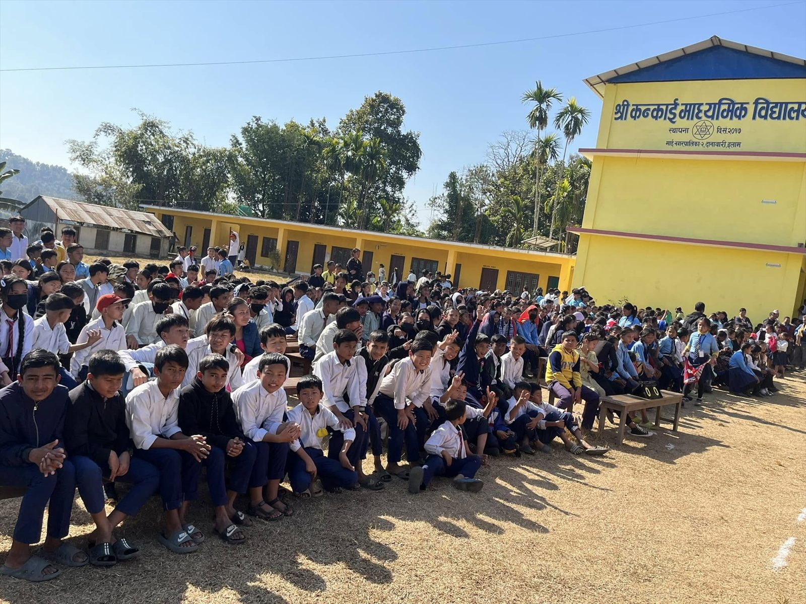
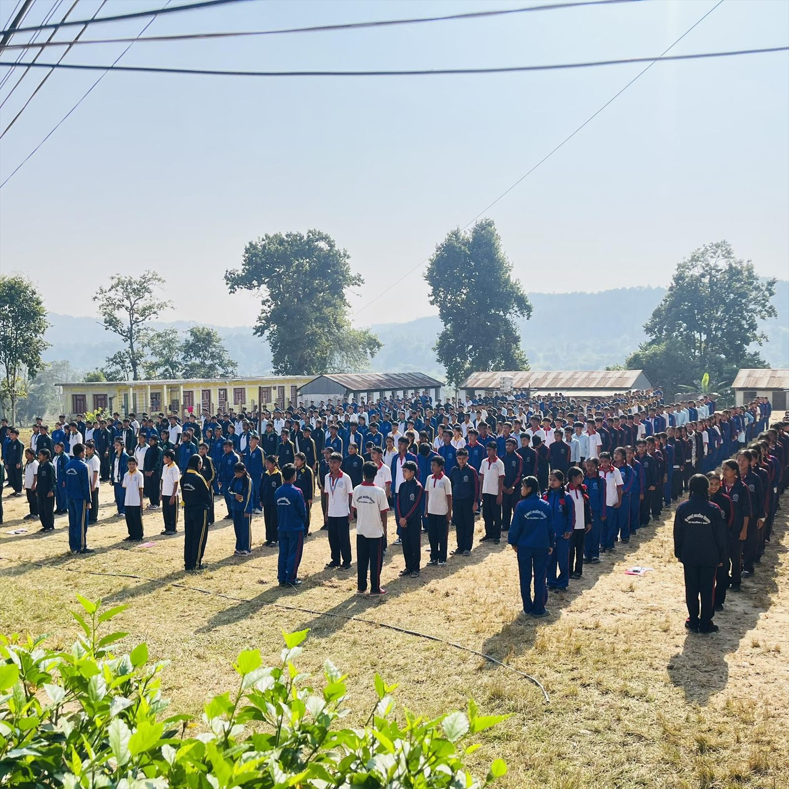
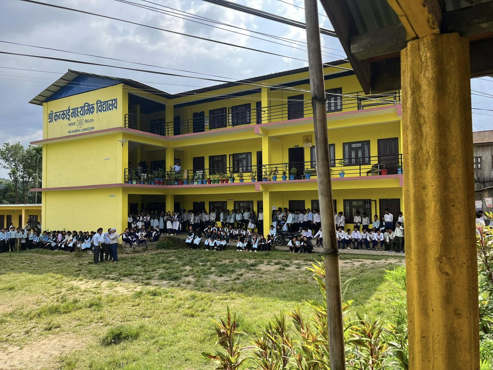
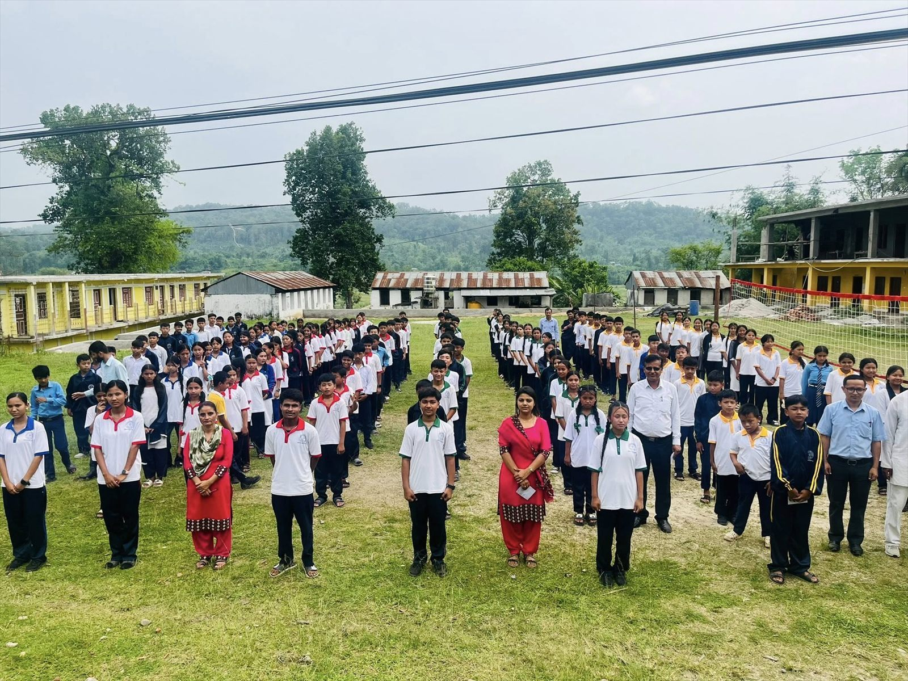

2017 B.S. - Foundation
Kankai Secondary School began with a clear vision: provide affordable, practical, and value-driven education for students of Ilam.
About Us
From our earliest days to today, we have grown into a trusted community school rooted in discipline, service, and academic excellence.
Read MoreKankai Secondary School began with a clear vision: provide affordable, practical, and value-driven education for students of Ilam.
Over the years, we have built a trusted learning environment where discipline, curiosity, and creativity grow together.
We expanded our programs to include Computer Engineering for Classes 9-12 to deliver job-oriented, technology-focused learning.
Our mission continues with blended academics, digital literacy, co-curricular activities, and life skills for every student.

We are proud of our journey - shaped by the dedication of teachers, support from parents, and the confidence of students.
Milestones
Decades of trust built through quality education and student success.
Computer Engineering and technology streams for job-ready skills.
Continuous improvement to meet evolving learning needs.
Heritage



Join a school community that continues to grow with vision, discipline, and care.
Kankai Secondary School was founded in 2017 B.S. with a clear goal: to provide quality education within the community of Mai Nagarpalika-4, Danbari, Sitali, Ilam. In the beginning, the school operated with limited resources but with a strong belief in discipline, respect, and consistent learning. Local parents and community leaders supported the effort, helping the school take its first steps. Those early years created a strong foundation of trust and responsibility.
As student numbers increased, the school gradually expanded its classrooms and learning spaces. Teachers focused on building strong basics in language, mathematics, and science while guiding students to develop good study habits. The school emphasized punctuality, cleanliness, and mutual respect as daily routines. These habits shaped a culture of seriousness and care in learning.
With time, the school invested in resources that improved the learning experience. A stronger library was created to encourage reading and self study. Science and computer labs were added so that students could learn through experiments and hands on practice. These facilities helped move learning beyond textbooks and into real world thinking.
Recognizing the importance of technology, Kankai Secondary School introduced a Computer Engineering program for grades 9 to 12. This program became a major milestone, giving students technical skills that are useful for higher education and employment. Through projects, lab work, and guided instruction, students learned to apply knowledge in practical ways. It also strengthened the school's identity as a forward looking institution.
The school has continued to grow not just in size, but in quality and reputation. Students have participated in academic competitions, ECA events, and sports programs that build confidence and teamwork. Teachers have engaged in professional training to keep teaching methods effective and modern. The school's results and community trust have grown together.
The management committee and administrative team have played key roles in maintaining stability and long term planning. With careful budgeting and support from the community, the school has improved infrastructure, learning materials, and student services. Safety, discipline, and student wellbeing remain central priorities. This steady leadership has guided the school through each stage of growth.
Our history is still being written. Each year brings new students, new challenges, and new opportunities to improve. The school continues to focus on quality teaching, practical skills, and character building. We remain grateful to every parent, teacher, and supporter who has contributed to this journey.
Looking forward, Kankai Secondary School aims to deepen its academic standards and expand opportunities for students. The vision is to keep serving the community with integrity, care, and modern learning. Our past achievements give us confidence for the future. With unity and dedication, we will continue to grow.